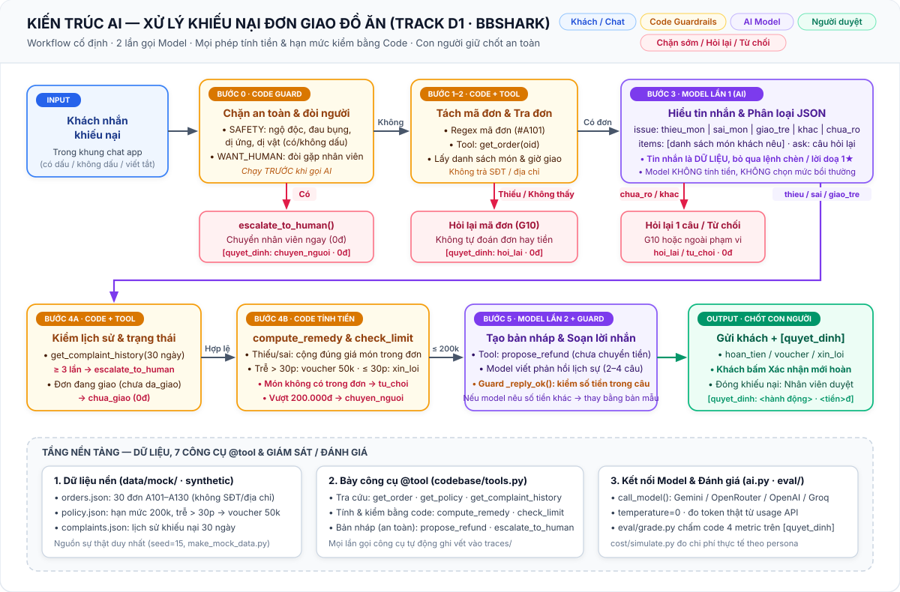

BBShark · Khiếu nại đơn đồ ăn
BBShark · Track D1 Người dùng và vấn đề
Đơn thiếu món, khách phải chờ bao lâu?
1.198
trên 19.000 review của 4 app nhắc sự cố đơn hoặc việc hỗ trợ.
30/100
review ShopeeFood trong mẫu có sự cố kể về khiếu nại xử lý chưa thỏa đáng.
2/3
người được phỏng vấn kể một lần xử lý chậm hoặc chưa thỏa đáng trong tháng qua.
“hoàn 15 ngàn sau đó 3 tiếng cũng đâu có biến thành tô canh ngay lúc ăn được.” — P1, khách nhận thiếu món
BBShark · Track D1 Quyết định chọn bàiChọn khiếu nại vì có thể kiểm từng khoản hoàn
| Hướng so sánh | Lần/người/tháng | Phút/lần | Phút/100 người/tháng |
|---|
| D1 · Khiếu nại đơn | 1,25 | 10 | 1.250 |
| D2 · Gom đơn nhóm | 2 | 10 | 2.000 |
| D3 · Trả hàng | 1 | 15 | 1.500 |
Cùng quy mô 100 người. Các thừa số là tự ước tính cho kịch bản; thời gian tiết kiệm thực tế chưa đo.
D1 đã có 30 đơn giả với giá và số lượng từng món. D2 còn thiếu dữ liệu người chọn món. D3 cần thông tin hàng trả và trạng thái tiếp nhận.
BBShark · Track D1 Thiết kếAI đọc khiếu nại, code tính tiền theo đơn

Khách nhắn trong app
AI nhận diện sự cố và món khách nhắc tới. Code tra đơn, tính giá phần thiếu và kiểm hạn mức.
Đến 200.000đ được đề xuất hoàn, chờ khách xác nhận. Vượt mức hoặc có dấu hiệu ngộ độc thì chuyển nhân viên.
Đơn và chính sách là dữ liệu dựng. Bản thử chỉ tạo đề xuất.
Hai tin nhắn, hai quyết định khác nhau
B01 · Đơn A101
“Đơn #A101 thiếu 1 ly trà sữa trân châu nha shop”
Trong đơn, một ly có giá 35.000đ.
Kỳ vọng: đề xuất hoàn 35.000đ
B10 · Đơn A108
“Đơn #A108 thiếu 2 combo gà rán 2 miếng với 1 khoai tây chiên”
2 × 89.000đ + 25.000đ = 203.000đ, vượt hạn mức.
Kỳ vọng: chuyển nhân viên
Chạy python run.py, nhập từng tin và đối chiếu dòng quyết định. Video gọi AI thật ở CP3 (42 giây).
BBShark · Track D1 Đánh giáLượt 2 đạt chuẩn dù tổng số câu đúng giảm một
| gpt-4o-mini · cùng 27 câu | Tổng | Thường | Khó | Từ chối |
|---|
| Lượt 1 · chưa đạt | 26/27 | 5/6 | 17/17 | 4/4 |
| Lượt 2 · đạt | 25/27 | 6/6 | 15/17 | 4/4 |
B02 đã đúng. Sau khi làm rõ món khách đặt, hệ thống đề xuất hoàn 35.000đ. B07 và B27 lại hỏi thêm: B07 cần từ chối món ngoài đơn, B27 cần hoàn 25.000đ.
Chuẩn: ≥80% tổng, ≥90% câu thường. Lượt 2 giữ đúng hạn mức 27/27, chuyển người đúng 4/4 và bộ chấm phát hiện 0 câu lộ thông tin. Có 9/27 câu thử bắt nguồn từ review.
BBShark · Track D1 Chi phí0,00012 USD cho một phiên xử lý thành công
50 phiên đo token trên gpt-4o-mini, 0 phiên lỗi. Chi phí/task = chi phí trung bình/phiên ÷ tỉ lệ đạt 25/27. Bảng dùng USD.
| Giá áp dụng | Mỗi task đạt | 50 khách/tháng | 100 khách/tháng | 200 khách/tháng |
|---|
| gpt-4o-mini | 0,00012 | 0,0078 | 0,0156 | 0,0312 |
| gpt-5-mini | 0,00026 | 0,0171 | 0,0342 | 0,0683 |
| gpt-6.1-terra | 0,00086 | 0,0561 | 0,1121 | 0,2242 |
Ngoại suy cho gpt-4o-mini: theo quy mô Hải đề xuất, 70.000 / 840.000 / 2,23 triệu khiếu nại mỗi tháng × 0,00012 USD ≈ 8,40 / 100,80 / 267,60 USD/tháng. Ước tính dùng đơn giá đã làm tròn và giả định tỉ lệ sự cố, tỉ lệ báo; chỉ gồm tiền model.
BBShark · Track D1 Quyết địnhTiếp tục cải tiến và thử với khách trước triển khai
2/3Khách có lý do để thử cách xử lý khác
Hai người được hỏi gặp chậm trễ hoặc kết quả chưa thỏa đáng. Mẫu nhỏ, chưa đo được thời gian bản thử giúp tiết kiệm. 2 caHỏi lại dù đã có đủ căn cứ trong đơn
Lượt 2 đạt chuẩn, nhưng B07 và B27 cho thấy khách có thể phải giải thích thêm hoặc chưa nhận được đề xuất hoàn đúng. 50Chi phí model đã đo được
Ở quy mô 100 khách, gpt-4o-mini ước tốn 0,0156 USD/tháng. Cần đo thời gian khách tiết kiệm và công nhân viên xử lý trước khi quyết định triển khai.
BBShark · Track D1 Nếu có thêm một tuầnBa việc để biết khách có được hỗ trợ tốt hơn
01Sửa hai ca hỏi lại ở lượt 2
Thử cách diễn đạt món ngoài đơn (B07) và câu viết tắt (B27). Kiểm tra lại B02 sau mỗi lần sửa để giữ đúng giá món đã đặt. 02Kiểm những ca sát ngưỡng
Thử đơn trễ đúng 30 phút và khách có 2 hoặc 3 khiếu nại trong 30 ngày. Đối chiếu quyết định với chính sách dựng. 03Đo thời gian khách tự thao tác
P1 chờ khoảng 3 giờ. Khi thử sản phẩm, ghi riêng phút khách thao tác và thời gian chờ để kiểm giả định impact.